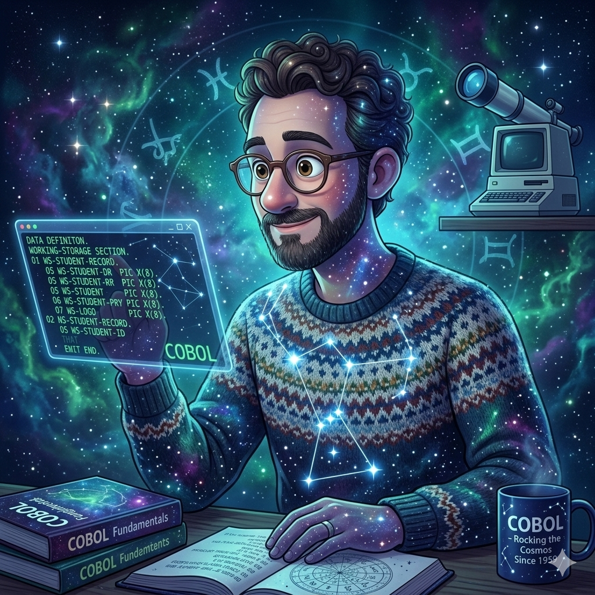

Equipo Orión
Sobre Nosotros
Somos un equipo interdisciplinario de estudiantes de la Tecnicatura Superior en Desarrollo de Software en el IFTS N.° 29. Nuestra formación nos permite abordar proyectos desde una perspectiva integral, donde la disciplina técnica se encuentra con la innovación constante.
El nombre Orión nace de nuestra visión: al igual que la constelación, buscamos ser una referencia clara y organizada en el vasto universo del desarrollo. Nos especializamos en transformar requisitos complejos en interfaces intuitivas, utilizando estándares de HTML semántico y CSS responsivo para garantizar que nuestras soluciones sean accesibles para todos los usuarios.
Este proyecto representa nuestra primera etapa en el mundo del desarrollo web profesional. A través de él, no solo demostramos nuestras habilidades técnicas con JavaScript y el manejo de herramientas como Git y Vercel, sino también nuestra capacidad de trabajo colaborativo, resolución de problemas bajo presión y compromiso con la calidad del código.
Equipo de Trabajo

Carolina Corradi
Ver Perfil
Manuel Espíndola
Ver PerfilGabriela Gonzalez
Ver Perfil
Leonardo Vargas
Ver PerfilCómo trabajamos
Innovación
Buscamos soluciones creativas a problemas técnicos complejos.
Calidad
Aplicamos buenas prácticas de código y diseño responsivo.
Sinergia
Potenciamos nuestras habilidades individuales en cada proyecto grupal.
Stack Tecnológico
Para el desarrollo de este proyecto, hemos integrado herramientas modernas que garantizan un flujo de trabajo profesional y eficiente:
Desarrollo Frontend
Implementación de maquetado semántico con HTML5, estilos avanzados con CSS3 (Flexbox/Variables) y lógica dinámica con JavaScript puro.
Asistencia y Optimización
Uso de Inteligencia Artificial (Gemini Pro y ChatGPT) para la generación de recursos gráficos, optimización de algoritmos y asistencia técnica en la resolución de problemas de maquetado.
Despliegue y Control
Gestión de versiones mediante Git/GitHub para el trabajo colaborativo y despliegue continuo a través de la plataforma Vercel.
Trayectoria del Equipo Orión
Previamente a este tarjeta web, nuestro equipo ha colaborado con éxito en:
Club Deportivo Orion - Versión escritorio
Sistema integral de gestión de socios, cobro de cuotas y administración de actividades deportivas.
Tecnologías: C# / .NET / MySQLClub Deportivo Orion - Versión movil
Adaptación del Club Deportivo Orión para dispositivos móviles.
Tecnologías: Kotlin / Android StudioClínica SePrice
Prototipo integral de gestión hospitalaria y administración de turnos.
Tecnologías: C# / .NET / MySQL / Figma